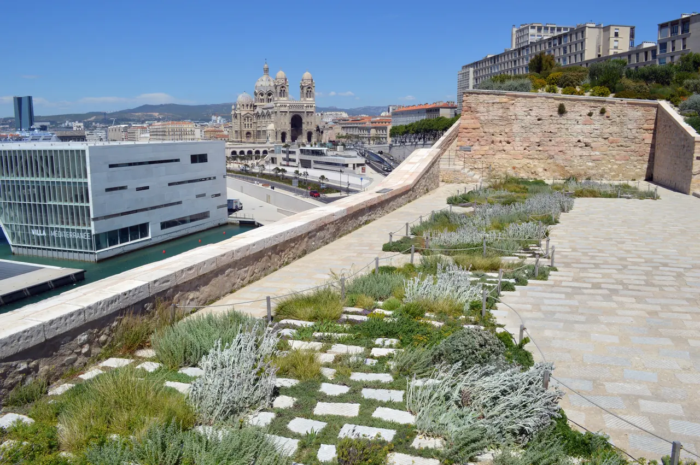

{kind=link}
관광·미술관
Nous avons déjà des billets.
이미 표가 있습니다.
누 자봉 데자 데 비예

2013년 마르세유가 유럽 문화수도로 지정된 것을 기념하여 개관한 프랑스 최초의 지방 소재 국립박물관이다.
지중해 분지(Mediterranean Basin)를 둘러싼 고대부터 현대까지의 인류학, 고고학, 역사, 예술을 총망라하며, 건축가 뤼디 리치오티(Rudy Ricciotti)가 설계한 'J4 신관(검은 레이스 콘크리트 큐브)'과 바다 위 135m 공중 보도교로 연결된 '17세기 생장 요새(Fort Saint-Jean)'가 거대한 복합 문화 단지를 이룬다.
건물을 둘러싼 초고성능 섬유강화 콘크리트(UHPC) 격자망은 지중해의 강렬한 햇빛을 걸러내며 내부 바닥과 바다 위에 섬세한 그림자 레이스를 드리우고, 옥상 전망대에서는 마르세유 항구와 지중해 수평선이 360도로 펼쳐진다.
"전시실 내부 관람 이상으로 건물 자체가 지중해를 담는 거대한 예술품이자 최고의 전망대다." 바다를 굽어보는 외부 램프와 옥상 테라스를 따라 걸으며 레이스 콘크리트 사이로 쏟아지는 지중해의 빛과 바람을 느끼고, 공중 보도교를 건너 생장 요새의 정원으로 이어지는 75~90분 동선은 현대 건축과 유구한 역사의 가장 우아한 결합을 보여준다.
| 운영시간 | 9/1–11/2 화요일 제외 매일 10:00–19:00. 전시실 마지막 입장 폐관 45분 전 · 야외 구역 무료 |
|---|---|
| 휴무 | 화요일 (+5/1·12/25) |
| 요금 | €11 / 감액 €7.50 / 가족 €18 · 매월 첫 일요일 무료 · 야외 동선 무료 |
| 예약 | 개인 방문 예약 의무 없음(통합권 1매로 전 전시). 단체는 가이드 15일 전·자율 1주 전 예약 필수 |
| 항목 | 상세 정보 |
|---|---|
| 주소 | 1 Esplanade du J4, 13002 Marseille |
| 운영시간 | 2026-09-01~11-02 수–월 10:00–19:00 / 매주 화요일 휴관 / 전시실 마지막 입장 폐관 45분 전 |
| 입장료 | 야외 램프·옥상 테라스·생장 요새 정원: 무료 / 전시실 입장권: 일반 €11, 할인 €7.50 |
| 예약 | 공식 홈페이지(mucem.org) 온라인 예매 또는 현장 매표소 |
| 접근/동선 | J4 에스플러네이드 신관 정문으로 입장하여 옥상으로 올라간 뒤, 공중 보도교를 통해 Fort Saint-Jean으로 건너가는 순방향 동선 권장 |
🏛 관람 팁: 시간에 쫓기거나 전시 취향이 맞지 않더라도, 야외 램프와 옥상 테라스, 생장 요새 보도교는 입장료 없이 무료로 상시 개방되므로 건축과 전망 산책만으로도 방문 가치가 충분합니다.
신관 옥상 테라스(무료 개방)에는 그늘막 벤치와 카페가 마련되어 있으며, 서쪽으로 이프 성(Château d'If)과 프릴 군도, 동쪽으로 마르세유 구항구와 노트르담 드 라 가르드 대성당이 막힘없이 조망된다.
Nous avons déjà des billets.
이미 표가 있습니다.
누 자봉 데자 데 비예
On peut prendre des photos ?
사진 찍어도 되나요?
옹 푀 프랑드르 데 포토
Où commence la visite ?
관람은 어디서 시작하나요?
우 코망스 라 비지트

폴 세잔이 생의 마지막 4년(1902–1906) 동안 매일 그림을 그렸던 언덕 위 아틀리에. 북향 채광창, 대형 캔버스용 벽 슬릿, 정물화에 등장했던 올리브 단지와 해골이 그대로 보존된 근대 미술의 성지.

폴 세잔이 20세부터 60세까지 40년간 머물며 화가로 성장했던 가문의 여름 저택. 살롱의 초기 벽화, 마로니에 가로수길, 분수 연못, 그리고 화가가 최초로 생트 빅투아르 산을 그렸던 역사적 현장.

마르세유와 카시스 사이에 걸쳐 20km에 걸쳐 펼쳐진 유럽 유일의 지중해 연안 국립공원. 에메랄드빛 바다로 수직 낙하하는 백색 석회암 피오르 협만들의 장관.

엑상프로방스 건축물의 황금빛 사암을 공급하던 고대·중세 채석장. 직각으로 깎인 붉은 사암 절벽과 소나무 숲 사이에서 세잔이 큐비즘의 기하학적 구도를 태동시켰던 야외 작업장.

유럽 최고 높이의 해안 절벽 캅 카나유(Cap Canaille) 아래 자리한 아늑한 지중해 어항. 파스텔톤 가옥, 칼랑크 국립공원 유람선 출발지, 유서 깊은 카시스 화이트 와인(AOC Cassis)의 고향.

1651년 옛 성벽 자리에 조성된 440m의 플라타너스 가로수길. 북쪽의 활기찬 카페와 남쪽의 고요한 17세기 귀족 저택, 4개의 유서 깊은 분수가 관통하는 엑상프로방스의 심장.